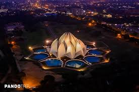

The Lotus Temple, located in Delhi, India, is a Bahai House of Worship that was dedicated in December 1986.
Notable for its lotuslike shape, it has become a prominent attraction in the city. Like all other Bahá’í
Houses of Worship, the Lotus Temple is open to all, regardless of religion or any other qualification. The
building is composed of 27 free-standing marble-clad "petals" arranged in clusters of three to form nine
sides, with nine doors opening onto a central hall with a height of slightly over 34 meters and a
capacity of 1,300 people. The Lotus Temple has won numerous architectural awards and has been
featured in many newspaper and magazine articles
The architect of the Lotus Temple was an Iranian, Fariborz Sahba who now lives in La Jolla, California, after
living some years in Canada. He was approached in 1976 to design the Lotus Temple and later oversaw its
construction. The structural design was undertaken by the UK firm Flint and Neill over the course of 18
months, and the construction was done by ECC Construction Group of Larsen & Toubro Limited at a
cost of $10 million. The major part of the funds needed to buy this land was donated by Ardishír
Rustampúr of Hyderabad, Sindh (Pakistan), whose will dictated that his entire life savings would go to this
purpose. A portion of the construction budget was saved and used to build a greenhouse to study
indigenous plants and flowers that would be appropriate for use on the site.
Rúhíyyih Khánum laid the foundation stone for the Lotus Temple on 19 October 1977 and dedicated the temple on 24
December 1986. For the dedication, there was a gathering of 8,000 Baháʼís from 107 countries, including some
4,000 Baháʼís from 22 provinces in India. The temple was opened to the public on 1 January 1987 and more than
10,000 people visited that day.